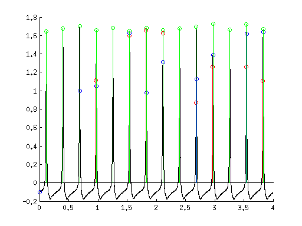
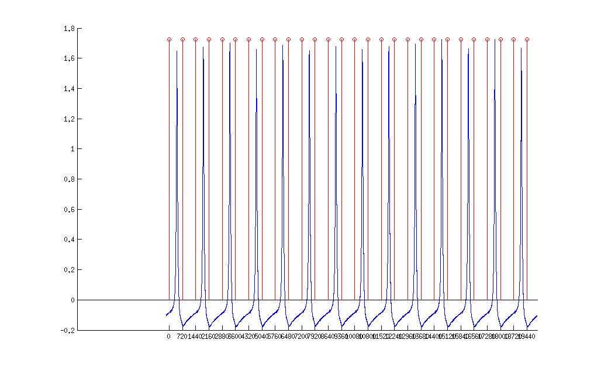
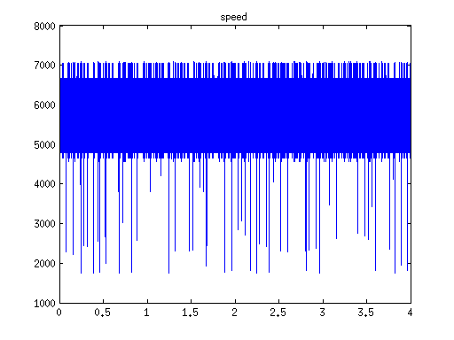
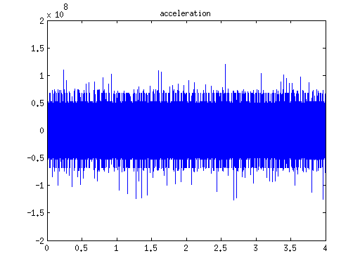

Объединение данных с отметчика и датчиков давления
При получении скорости и ускорения в данном случае расчет производился по времени между пиками отметчика, а не времени между фронтами
Contents
Загрузка исходных данных
pressure = load('/home/nerh/sent/ConvertedData/Режим_2/Pressure_2.mat'); speed = load('/home/nerh/sent/ConvertedData/Режим_2/Speed_2_interp.mat');
Обрабатка исходных данных
%Получаем информацию о давлении pressureParams = getPressureParams(pressure.loadedFile.data(:,3)', 0.5, 25000, 30,10,1); %Получаем информацию о скорости, ускорении, а также отображение времени на %угол поворота speedParams = getSpeedParams(speed.loadedFile.data(:,3)',speed.loadedFile.data(:,4)',25000,1440);
Results: pressure peaks -> min: 1.65 max: 1.73 mean: 1.68 var: 0.0006 %: 1.49 time cycles -> min: 0.2847 max: 0.2865 mean: 0.2856 var: 0.00000028 %: 0.19 injection peaks -> min: 0.87 max: 1.65 mean: 1.31 var: 0.0826 %: 21.92 injection time -> min: 0.2848 max: 0.5728 mean: 0.4082 var: 0.02299621 %: 37.15 inj&peak time -> min: -0.0006 max: 0.2897 mean: 0.0804 var: 0.01777792 %: 165.88 dying peak -> min: -0.10 max: 1.64 mean: 1.16 var: 0.2655 %: 44.32 dying time -> min: 0.2832 max: 0.6916 mean: 0.4252 var: 0.02884058 %: 39.94 injection durat -> min: 0.0004 max: 0.0104 mean: 0.0053 var: 0.00001156 %: 64.04
Постороение графика с заменой времени на угол поворота
screenSize = get(0,'ScreenSize'); f1 = figure; hold on plot(speedParams.angle_time.angle(1:length(pressure.loadedFile.data(:,3))), pressure.loadedFile.data(:,3)) stem(speedParams.angle_time.angle(speedParams.circleBeginTime), zeros(length(speedParams.circleBeginTime))... +max(pressure.loadedFile.data(:,3)),'r') set(gca,'XTick',0:720:speedParams.angle_time.angle(end)) hold off set(f1,'Position',[0 0 screenSize(3), screenSize(4)]); figure plot(speedParams.speed_absc,speedParams.speed) title('speed') figure plot(speedParams.acceleration_absc,speedParams.acceleration) title('acceleration')  